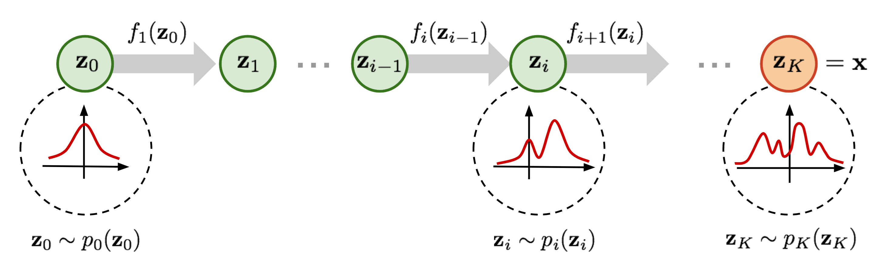
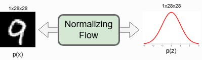

Aprendizaje Probabilístico#
Hasta este punto hemos tratado la asignación objetivo como determinista: para cada entrada \(x\) existe una única salida correcta \(y=f(x)\). Esa suposición es una simplificación drástica. En contextos realistas, las soluciones pueden ser ambiguas, nuestro modelo aprendido puede confundir casos similares, y estos efectos a menudo interactúan. Esto motiva un tratamiento probabilístico. Conceptualmente, añadimos un nuevo eje al problema: en lugar de un único resultado \(y\), consideramos una distribución sobre posibles resultados \(p(y\mid x)\). Cada solución candidata \(y^{(i)}\) lleva un peso de probabilidad \(p(y^{(i)}\mid x)\) (a menudo escrito simplemente como \(p\)), y las muestras \({y^{(i)}}\) extraídas de esta distribución deben reflejar esas probabilidades de modo que los resultados raros y los frecuentes se distingan.
En resumen, en lugar de razonar sobre una única solución \(y\) por entrada, razonamos sobre muchas muestras \(y^{(1)}, y^{(2)}, \dots\) de una distribución que captura tanto la variabilidad en los datos como la incertidumbre en nuestro modelo.
Incertidumbre#
Cada componente de nuestros procesos—mediciones, modelos mecanicistas y solvers numéricos—introduce incertidumbre. Los sensores y ensayos clínicos añaden error de medida. Los modelos matemáticos describen solo un subconjunto de la fisiología o física relevante, dejando el resto sin modelar. La discretización en simulaciones inyecta error numérico. En los sistemas de aprendizaje, el propio modelo entrenado contribuye con error de aproximación. Juntas, estas fuentes dan forma a la incertidumbre predictiva de nuestras salidas. Para la toma de decisiones prácticas, es esencial cuantificar esta incertidumbre—una de las razones fundamentales para trabajar con modelos probabilísticos y el foco central de la cuantificación de incertidumbre (UQ).
Incertidumbre Aleatoria vs. Epistémica. Es común—aunque no siempre limpio en la práctica—separar la incertidumbre predictiva en dos tipos generales:
Incertidumbre aleatoria es la variabilidad inherente en los datos, como el ruido de los sensores, procesos biológicos estocásticos o factores de confusión no observados. Persiste incluso con datos infinitos.
Incertidumbre epistémica es la incertidumbre sobre el modelo—por ejemplo, debido a datos de entrenamiento limitados, arquitecturas mal especificadas o regiones de parámetros pobremente exploradas. En principio, puede reducirse recopilando datos más informativos.
Una advertencia: esta división es idealizada. Los efectos pueden superponerse y ser difíciles de separar. Por ejemplo, lo que parece resultados ruidosos (aleatorio) podría originarse en una discretización demasiado gruesa o en una clase de hipótesis inadecuada (epistémico). En la práctica, ambos tipos suelen coexistir.
Estrechamente relacionado está el enfoque de la inferencia basada en simulaciones (SBI). Aquí la atención se centra en estimar verosimilitudes o posteriores para modelos especificados por simulaciones por ordenador más que por fórmulas analíticas. La SBI ofrece un flujo de trabajo fundamentado para combinar simuladores con incertidumbre y será un hilo conductor en lo que sigue.
¿Problemas Directos o Inversos?#
Es crucial distinguir entre problemas directos y inversos (o “hacia atrás”). Los métodos numéricos tradicionales se centran en los problemas directos: dado un estado actual y parámetros, calcular un estado estacionario o futuro del sistema.
Sin embargo, muchas cuestiones científicas y clínicas son problemas inversos. Un simulador directo sigue siendo central, pero los desconocidos son los parámetros o entradas que mejor explican los datos observados. Formalmente, sea un simulador \(\mathcal{S}*\phi\) parametrizado por \(\phi\) (por ejemplo, viscosidad, tasas de difusión) que actúa sobre un estado \(x\) para producir una salida \(y=\mathcal{S}*\phi(x)\). Observamos \(y_{\text{obs}}\) y deseamos inferir \(\phi\) (y, en ocasiones, partes de \(x\)) tal que la salida del simulador coincida con la observación. En el caso determinista más simple, esto se convierte en un problema de optimización:
Resolverlo podría revelar, por ejemplo, la viscosidad de una muestra a partir de datos de reología. Formulaciones inversas similares surgen en muchas disciplinas—desde ciencia de materiales y mecánica de fluidos hasta neuroimagen y cosmología.
Para mayor claridad en la notación, a menudo agruparemos cualquier componente de estado que deseemos estimar junto con los parámetros en un único vector \(\theta\). Así, “resolvemos para \(\theta\)” recordando que \(\theta\) puede incluir parámetros físicos, condiciones iniciales, términos de frontera o estados latentes.
En lo que sigue enfatizamos los problemas inversos porque muestran más directamente las fortalezas del modelado probabilístico. Sin embargo, los algoritmos que desarrollamos no están limitados a problemas inversos; también señalaremos aplicaciones a modelos directos.
Inferencia Basada en Simulaciones#
En contextos inversos, encajar una única observación rara vez es suficiente. Queremos un \(\theta\) que explique un rango de observaciones, podemos aceptar múltiples valores plausibles de parámetros, y a menudo necesitamos cuantificar cuán incierta es la estimación. ¿Son los datos compatibles con un rango estrecho de parámetros, o podría \(\theta\) variar por órdenes de magnitud sin degradar materialmente el ajuste? Abordar estas cuestiones requiere inferencia estadística—caracterizar una distribución sobre \(\theta\) en lugar de una estimación puntual.
Conectando con la división aleatoria/epistémica: en SBI estamos interrogando principalmente la incertidumbre en las observaciones dado una hipótesis científica codificada por un simulador. Los parámetros del simulador \(\theta\) son variables aleatorias que buscamos inferir.
Sea \(x\) la entrada al simulador (que puede incluir estados conocidos y condiciones controlables). Sea \(z\) una variable latente que captura aspectos desconocidos o no controlados del sistema (por ejemplo, estocasticidad no observada, pasos intermedios o bifurcaciones aleatorias en el flujo de control del simulador). Adoptamos la siguiente historia generativa:
Prior sobre parámetros: \(p(\theta)\).
Prior sobre latentes: \(p(z)\) (potencialmente condicionado en \(x\)).
Salida del simulador: \(y=\mathcal{S}_\theta(x,z)\).
Observamos \(y_{\text{obs}}\) y buscamos el posterior sobre parámetros:
El teorema de Bayes fundamenta todo lo que hacemos:
Ambos lados equivalen al conjunto \(p(\theta, y \mid x)\) dividido por el marginal \(p(y \mid x)\).
El bloque central es la verosimilitud:
la probabilidad de observar \(y\) cuando el simulador se ejecuta en \(\theta\) (marginalizando la aleatoriedad latente \(z\)). Esta integral suele ser intratable: \(z\) puede ser de alta dimensión, difícil de muestrear de manera eficiente, o estar parcialmente determinado por flujos de control opacos. Existen estimadores clásicos—la Computación Bayesiana Aproximada (ABC) es una familia notable—pero son computacionalmente costosos, requieren estadísticas resumen y distancias cuidadosas, y sufren de la maldición de la dimensionalidad.
El denominador \(p(y \mid x)\) es la evidencia (o verosimilitud marginal):
Normaliza el posterior. Aunque la evidencia no es necesaria para muestrear del posterior (por ejemplo, con MCMC, que utiliza cocientes donde la evidencia se cancela), estimarla puede ser útil para la comparación de modelos. En cualquier caso, calcular verosimilitudes y evidencias directamente rara vez es factible en simuladores complejos, lo que motiva el uso de aproximaciones aprendidas.
Aprovechando el aprendizaje profundo#
Aquí es donde el aprendizaje profundo se vuelve especialmente potente. Podemos aprender un estimador de densidad condicional
que aproxime el posterior y permita muestreo rápido. De forma crucial, podemos entrenarlo usando pares simulados \((\theta, y)\sim p(\theta),p(z),\delta(y-\mathcal{S}_\theta(x,z))\), sin requerir verosimilitudes en forma cerrada.
Para enfatizar el papel probabilístico de la red, pasamos de escribir \(f_\theta\) para predictores deterministas a \(q_\psi\) para densidades aprendidas. A menudo comenzaremos con modelos de densidad incondicionales \(q_\psi(\theta)\) y luego los extenderemos a formas condicionales \(q_\psi(\theta \mid x,y)\).
Pros de los enfoques de SBI aprendidos:
Inferencia rápida tras el entrenamiento: muestrear o evaluar \(q_\psi(\theta \mid x, y)\) es barato.
Mitigación de la maldición de la dimensionalidad respecto a ABC basada en rechazo, gracias a modelos amortizados y ricos en representación.
Priors y posteriores flexibles: compatibles con distribuciones complejas, multimodales o de colas pesadas.
Contras y caveats:
Coste inicial alto: el entrenamiento requiere muchas ejecuciones del simulador y una cobertura cuidadosa del espacio de parámetros.
Brechas de aproximación: las garantías teóricas son más débiles que en MCMC asintótico; la mala especificación o simulaciones limitadas pueden sesgar el posterior aprendido.
Desarrollaremos una familia de modelos ampliamente usada y notablemente efectiva—los métodos basados en difusión—para aprender tales densidades. En lugar de saltar directamente al algoritmo final, lo construiremos desde primeros principios, ya que el camino introduce varias ideas influyentes del aprendizaje automático moderno. Nos centraremos aquí en la construcción central y más adelante volveremos a variantes sensibilizadas por la física que integran simuladores diferenciables.
Aprendiendo una distribución de probabilidad#
Una cuestión central en el modelado probabilístico es: ¿cómo podemos aprender una distribución de probabilidad desconocida a partir de datos? Cuando hay conocimiento previo disponible, podemos plantear una familia paramétrica (por ejemplo, una Gaussiana en el caso más simple). Dadas muestras extraídas de la distribución objetivo, ajustamos los parámetros minimizando una medida de discrepancia entre la distribución objetivo y nuestra aproximación paramétrica. Esto formula el aprendizaje de distribuciones como un problema de optimización sobre medidas de probabilidad.
Fundamentos: un objetivo de entrenamiento#
Una medida de discrepancia ampliamente utilizada es la divergencia de Kullback–Leibler (KL) entre dos distribuciones \(P\) y \(Q\) con densidades \(p\) y \(q\) (respecto a una misma medida base). Se define como
La divergencia KL satisface \(\mathrm{KL}(P|Q)\ge 0\) y \(\mathrm{KL}(P|Q)=0\) si \(P=Q\) (es decir, \(p=q\) casi en todas partes). Así, actúa como un objetivo “tipo distancia” con fundamento para ajustar distribuciones.
Supongamos que elegimos una familia paramétrica \({Q_\theta}*{\theta\in\Theta}\) con densidades \(q*\theta\). Cada \(q_\theta\) debe ser una densidad válida:
Nuestro objetivo es escoger parámetros \(\theta\) de modo que \(Q_\theta\) sea lo más cercana posible a la distribución verdadera generadora de datos \(P\). Usando la KL como criterio obtenemos
Al expandir el objetivo KL:
El primer término, \(\mathbb{E}_{P}[\log p(X)]\), no depende de \(\theta\). Por tanto, minimizar \(\mathrm{KL}(P|Q*\theta)\) en \(\theta\) es equivalente a maximizar la log-verosimilitud esperada bajo \(q_\theta\) o, equivalentemente, minimizar la negativa de la log-verosimilitud esperada:
En la práctica, la esperanza sobre \(P\) se aproxima con muestras de datos \({x_i}_{i=1}^N\sim P\), lo que lleva al objetivo empírico
es decir, el máximo verosímil (MLE) para el modelo \(q_\theta\). Así, aprender una distribución minimizando la KL hacia delante se reduce a ajustar parámetros que maximizan la verosimilitud sobre las muestras observadas, siempre que la familia paramétrica represente densidades de probabilidad válidas.
Redes Generativas Adversarias#
Planteamos el modelado generativo como la tarea de representar la distribución completa sobre los estados posibles de una variable \(x\), es decir, aprender \(p(x)\) (o \(p(x\mid c)\) cuando se condiciona a entradas \(c\)). Mucho antes de que los modelos de difusión (DDPMs y afines) alcanzaran prominencia, las Redes Generativas Adversarias (GANs) proporcionaron una vía potente, aunque temperamental, hacia este objetivo. Aunque gran parte de la investigación actual gravita hacia enfoques basados en difusión, las GANs siguen siendo conceptualmente elegantes y prácticamente útiles. Este capítulo introduce sus ideas centrales, explica cómo se entrenan y resalta escenarios—especialmente aquellos con objetivos ambiguos y sin física diferenciable—donde las GANs destacan al evitar la trampa de la “regresión a la media” del aprendizaje supervisado estándar.
Máximo verosímil#
Para situar el contexto, recordemos la clasificación con \(K\) clases. Dado un conjunto \({(x_i, y_i)}*{i=1}^N\) con \(y_i\in{1,\dots,K}\), un clasificador probabilístico \(p*\phi(y\mid x)\) (por ejemplo, una red softmax con parámetros \(\phi\)) se entrena típicamente por máximo verosímil (MLE):
Este objetivo ubicuo admite varias vistas equivalentes:
Minimiza la divergencia KL entre la distribución empírica de etiquetas \(\hat p(y\mid x)\) y el modelo \(p_\phi(y\mid x)\).
Maximiza la log-verosimilitud esperada empírica \(\mathbb{E}_{(x,y)\sim \hat p}\big[\log p_\phi(y\mid x)\big]\).
Para \(K=2\) con salida sigmoide, se reduce a la entropía cruzada binaria estándar.
Esta perspectiva de MLE es central en las GANs, donde un clasificador—el discriminador—se entrena por (entropía cruzada) condicional y luego se usa para moldear al generador.
Entrenamiento adversario#
Una GAN básica comprende dos redes:
Un generador \(G_\theta\) mapea un código latente aleatorio \(z\sim p(z)\) (por ejemplo, \(z\sim\mathcal{N}(0,I)\)) a una muestra sintética \(\tilde x=G_\theta(z)\).
Un discriminador \(D_\psi\) mapea una muestra a un escalar \(D_\psi(x)\in(0,1)\), interpretado como “probabilidad de ser real”.
El minimax canónico es
Aquí el discriminador realiza MLE binario: etiqueta datos reales como 1 y muestras generadas como 0. El generador se entrena a través del discriminador para engañarlo. En la práctica, a menudo se usa la pérdida no saturante del generador para gradientes más fuertes:
El entrenamiento alterna: se actualiza \(\psi\) con lotes reales y falsos manteniendo \(\theta\) fijo, luego se actualiza \(\theta\) usando gradientes que fluyen a través de \(D_\psi\). Con el tiempo, \(G_\theta\) aprende a producir muestras indistinguibles de las reales según \(D_\psi\).
Regularización#
Como las GANs constituyen un juego de dos jugadores en lugar de un único objetivo convexo, el entrenamiento puede ser frágil. Los desequilibrios a menudo conducen al colapso de modos (el generador se concentra en unos pocos modos). La estabilización se apoya comúnmente en regularización y heurísticas de entrenamiento, entre ellas:
Términos de reconstrucción para el generador, p. ej., \(\lambda\lVert G_\theta(z) - x\rVert_1\) o \(\lambda\lVert \cdot \rVert_2\) cuando hay datos pareados. Un preentrenamiento supervisado de \(G_\theta\) puede dar un buen punto de partida.
Ajuste de características (feature matching): penalizar la distancia \(\ell_2\) entre características intermedias del discriminador en real vs. generado, fomentando salidas diversas.
Penalizaciones de gradiente / control de Lipschitz: p. ej., WGAN-GP o normalización espectral en \(D_\psi\) para estabilizar el discriminador.
Suavizado de etiquetas, ruido de instancia y aumentos de datos para evitar una discriminación excesivamente confiada.
Planificación de actualizaciones (p. ej., TTUR): diferentes tasas de aprendizaje o recuentos de pasos para \(D_\psi\) y \(G_\theta\).
El objetivo general es mantener la dinámica generador–discriminador equilibrada para que ambas redes mejoren sin anularse mutuamente.
GANs condicionales#
En muchos problemas científicos y de ingeniería no queremos muestrear incondicionalmente de \(p(x)\); necesitamos muestras condicionadas a entradas \(c\) (por ejemplo, parámetros, condiciones de contorno, medidas de baja resolución). Las GANs condicionales (cGANs) incorporan \(c\) en ambas redes:
Una adición común es una pérdida de tarea que ata la salida a la condición; por ejemplo, para super-resolución:
combinada con el término adversario. Ahora el discriminador juzga la consistencia entre la condición \(c\) y la salida, mientras que la pérdida de tarea preserva la fidelidad a las mediciones conocidas.
Soluciones ambiguas#
La regresión supervisada con pérdidas \(\ell_1/\ell_2\) es propensa a promediar cuando el mapeo es multimodal—precisamente el caso en super-resolución, deconvolución o problemas inversos mal planteados. Una única entrada de baja resolución \(x_{\text{LR}}\) puede corresponder a muchas soluciones de alta resolución \(x_{\text{HR}}\). Minimizar MSE favorece la media condicional, que puede ser borrosa y no física.
Las GANs combaten esto aprendiendo la distribución condicional de datos \(p(x_{\text{HR}}\mid x_{\text{LR}})\). El discriminador recompensa la estructura de alta frecuencia realista, empujando al generador a comprometerse con modos plausibles en lugar de promediar entre ellos.
Super-resolución espacio–temporal#
La ambigüedad no es solo espacial. En sistemas dinámicos, los futuros plausibles pueden ramificarse, y hacer cumplir la coherencia temporal es crucial. Extender GANs a secuencias es natural:
Usar un discriminador temporal \(D_\psi\) que ingiera clips o tríadas de fotogramas \((x_{t-1}, x_t, x_{t+1})\) (o convoluciones 3D en espacio–tiempo) para juzgar si la evolución luce realista.
Condicionar el generador en fotogramas pasados y secuencias de baja resolución, \(G_\theta(z, {x_{\text{LR},\tau}}_{\tau\le t})\), y optimizar conjuntamente términos adversarios y de reconstrucción.
Comparaciones de derivadas temporales u otras cantidades motivadas por la física a menudo muestran que las GANs espacio–temporales capturan mejor la dinámica que los modelos por fotogramas, alineándose más con referencias de alta fidelidad.
Aprendiendo distribuciones con Flujos Normalizantes#
Las GANs son modelos generativos prominentes y nos proporcionan un mecanismo de muestreo para generar nuevos datos. Sin embargo, no aprenden explícitamente la función de densidad de probabilidad \(p(x)\) de los datos reales de entrada. Los Flujos Normalizantes (Normalizing Flows), en cambio, modelan realmente la distribución de los datos y nos proporcionan una estimación exacta de la verosimilitud. La idea clave es usar una secuencia de mapeos invertibles y diferenciables como capas de la red neuronal.

Mapeos invertibles#
Los flujos construyen una transformación invertible
del espacio de datos \(\mathcal{X}\) a un espacio latente \(\mathcal{Z}\) dotado de un prior simple \(p_Z(z)\) (por ejemplo, Gaussiana estándar). La invertibilidad impone igual dimensionalidad: \(\dim(x)=\dim(z)\). A diferencia de los VAEs—donde es común que \(\dim(z)\ll \dim(x)\)—los flujos mantienen un mapeo biyectivo, permitiendo reconstrucción sin pérdida: para cada muestra \(x\) hay un único \(z=f(x)\) y viceversa \(x=f^{-1}(z)\). En el esquema anterior, esto implica error de reconstrucción cero para flujos, independientemente de la \(f\) invertible específica y de la entrada \(x\).
Densidad exacta vía cambio de variables#
Sea \(z=f(x)\) con una biyección diferenciable \(f\). La fórmula de cambio de variables da la densidad inducida de datos:
Univariante:
\[ p_X(x) \;=\; p_Z\!\big(f(x)\big)\;\Bigl|\tfrac{\mathrm{d}}{\mathrm{d}x}f(x)\Bigr|. \]Multivariante (\(x\in\mathbb{R}^d\)):
\[ p_X(x) \;=\; p_Z\!\big(f(x)\big)\;\Bigl|\det J_f(x)\Bigr|, \quad J_f(x) \equiv \frac{\partial f(x)}{\partial x}\in\mathbb{R}^{d\times d}. \]
Tomando logaritmos (el objetivo usual de entrenamiento),
Así, evaluar verosimilitudes se reduce a (i) mapear \(x\mapsto z\) y puntuar bajo \(p_Z\), y (ii) calcular \(\log|\det J_f(x)|\).
Transformar densidades y corrección de volumen#
Mira el flujo hacia atrás: parte de una densidad simple \(p_Z\) y empújala por un mapeo invertible \(g=f^{-1}\) para sintetizar datos \(x=g(z)\). Cualquier transformación invertible deforma la densidad preservando la probabilidad total. Para una simple traslación \(g(z)=z+1\), la forma se desplaza sin cambio de volumen. Para un escalado \(g(z)=2z\), los volúmenes cambian y las alturas se ajustan en consecuencia; el determinante Jacobiano proporciona la corrección exacta de volumen (crédito de la figura: Eric Jang).
A medida que las transformaciones se vuelven más expresivas, calcular \(g^{-1}\) y \(\log|\det J_g|\) puede volverse costoso. Los flujos resuelven esto apilando muchos mapeos simples, tratables e invertibles:
con cada \(f_k\) diseñada para que \(f_k^{-1}\) y \(\log|\det J_{f_k}|\) sean baratos. La log-verosimilitud total se descompone como
Los flujos planares y radiales son parametrizaciones neuronales tempranas de \(f_k\). Para datos de alta dimensión como imágenes, las capas de acoplamiento (p. ej., RealNVP) y las capas autorregresivas (p. ej., MAF), a menudo con convoluciones \(1\times 1\) invertibles (Glow), proporcionan Jacobianos escalables y tratables.
Flujos para imágenes#
Para modelado de imágenes, un flujo mapea una imagen de entrada (p. ej., MNIST) a un tensor latente de misma forma. Esto preserva la invertibilidad exacta y permite:
Estimación de densidad: paso hacia delante \(x\to z\), cálculo de \(\log p_Z(z)+\sum\log|\det J|\).
Muestreo: dibujar \(z\sim p_Z\), luego invertir \(z\to x=f^{-1}(z)\).
Manipulaciones latentes posibles porque \(f\) es biyectiva.
Una implementación práctica de un flujo organiza:
una rutina forward que devuelve \(\log p_X(x)\) (o NLL),
una rutina inverse para muestrear,
preprocesado estable (p. ej., dequantization para píxeles discretos),
capas con \(\log|\det J|\) tratable e inversas eficientes.

Entrenamiento, validación e inferencia#
Durante el entrenamiento y la validación, los flujos operan en la dirección forward para maximizar la log-verosimilitud exacta (equivalentemente, minimizar NLL). En inferencia:
Consultas de verosimilitud evalúan la plausibilidad de muestras.
Generación usa la ruta inversa para sintetizar nuevas muestras.
Manipulaciones en el latente son posibles porque \(f\) es biyectiva.